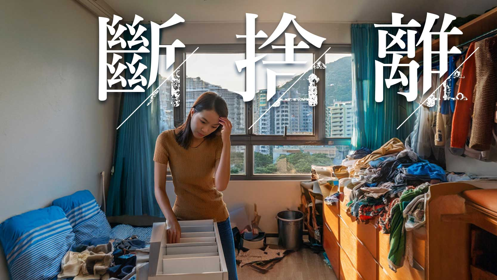

怎樣在斷捨離中體現用戶體驗設計美學
Ellen Timothy Wong

在日常生活中，要斷捨離實是說易行難。作為一個UX designer, 怎樣才可以呈現出一種富有「以人為本」的精簡用戶體驗設計美學呢？
斷捨離 - 一種化繁為簡的整理過程。
談及斷捨離，網上有源源不絕的教學，教大家怎樣規劃空間和捨棄物品，一步一步地實行斷舍離。然而，大家是否沒有發覺，這種過於簡化的生活方式，雖然方便，卻漸漸使我們失去了自己的成長歷程和生活痕跡？
有人說，只需要在生活中展現到自己的生活品味就可以了。但怎樣才可以在符合斷捨離精神的同時，避免過度消費呢？
在春節前，我曾在Facebook 上看到一篇文章，是一名極有生活品味的中產獨居長者的自白。他因為突然需要入住老人院，望住自己花足一世珍藏的CD、書籍，忽然感嘆一切都是身外物，也愧疚自己需要麻煩後輩前來幫忙清理居所。
這篇文章讓我在整個春節大掃除中不斷思考：當自己年紀老邁、無法自理時，希望後輩在我家中發現什麼，看到我怎樣的生活歷史，而不是埋怨我為什麼保留這些或那些物品？任何人只要他們在世上存在過，就一定擁有自己的故事。有沒有簡便的方法可幫助他們展現出自己無價的品味呢？
在過去的一年，我嘗試幫助數位的屋主進行斷捨離和生活空間的規劃。透過簡化他們的生活空間，我希望提升他們的用戶體驗，讓他們在清晰、有序的環境中，感受到自身的存在和故事，增強他們生活的質感。基於這些經驗，我歸納出以下斷捨離三部曲：
第一部 - 規劃
- 先畫出家中 / 房間的平面圖，記錄所有固定傢俬，例如大型櫥櫃、衣櫃或睡床。
- 根據自己和家人的生活需要及個人喜好，列出所需要的空間區域：工作區、換衫及裝扮區、煮食區、用餐區、休閑空間或咖啡區。例如：我和老公都是喜歡吃零食的人，我們會訂立一個零食區。
- 因應自己的行動路線和區域內有機會同時活動的人數，在平面圖上編排區域大小。
- 再決定活動傢俬位置和特性，調整合適的活動空間，例如飯枱座向、梳化方向、書枱、組合層架等。要緊記，不同的活動空間往往都是共用的，例如用餐區又可能會是打機的區域。在朋友來訪時，如何利用移動活動傢俬/家品，輕鬆地令兩組人在同一個區域活動呢？
- 記得預留一個或幾個可以展示屋主獨有物品的空間。例如一兩件非常的罕有的紀念品﹐或是人生中重要的獎狀，自己的創作品，及特別的合照。這些都可以展示到屋主的人生故事和性格。
第二部 - 分類及收納設計
篩選現有物品：
保留：
- 有用的物品及衣物：過往一年都有使用和穿著，而未來一年仍會用到的。
- 有紀念價值的物品：能和後輩在未來分享故事的物品。例如：我認識一個住在我家附近的唱作人，他曾送我一隻初出道的簽名CD。或者在旅遊時，我所有的旅遊日記及畫作，或以及我和丈夫的定情信物。
- 有意義及未讀完的書籍。
丟棄：
- 過期的食品和對身體無益的藥材
- 不能維修的家品
- 不能轉手的書籍
轉手/捐贈：
- 過往一年都未使用過的家品及衣物
- 重複功能的物品 （只保留最新、質素和功能最好的物品）
根據物品功能分類，並以物品必定會被使用的原則而確定收納位置及收納箱材質，再考慮如何重用收納箱來進行收納設計：
化妝品 – 換衫及裝扮區：若化妝品較多，可能使用多個透明分格盒分類，放在抽屜內。方便屋主了解自己化妝品的存貨。若化妝品較少，一個有多層分格的化妝品收納包，以及一個簡單透明分格盒收納護膚品便足夠了。
文具 – 工作區：若文具較多，可用一個 A5 分層收納盒，並用大創的分隔板按需要做間格。然後在每一個分層盒面上貼上標記，方便屋主了解盒內物資用具。
廚具 - 烹飪區：舊式屋邨或者村屋未必有廚櫃，需要使用不同的收納層架，及收納盒作分類。為方便長者輕鬆拿取沉重的廚具，抽屜式層架最為合適。
要記住，每個收納箱在收納後都要剩餘20%的空間，以確保屋住可以輕便拿取箱內物品。
第三部 - 添置收納用品及執納
經過規劃、分類及收納設計，可以開始分配物品的收納空間。確定沒有可重用的收納用具之後，點算物品和所需要的收納箱數量。訂立一張購物清單，添置收納用品。最後，將所有已分類的物品分門別類地存放在指定的收納用品內及位置。
在整個三部曲中，規劃和收納設計佔據了大部分時間。原因是設計除了在功能上，必需要能讓屋主生活輕鬆自在之外，還需讓屋主在家中感到自己的存在和個人的成就故事。在最初學習斷捨離時，屋主往往難以在簡約實用生活和呈現生活故事之間取得平衡，更容易因為了呈現過人品味，而過度消費。希望透過以上的設計思維能幫助每個屋主在斷捨離的同時，創造出一個完全適合自己又充滿自己故事的生活空間。
Tags: UX, Decluttering, Space Design